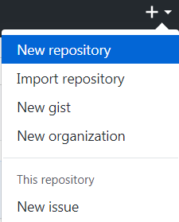
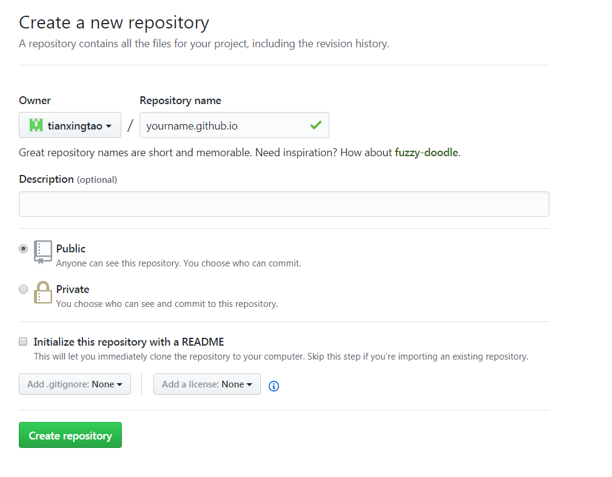
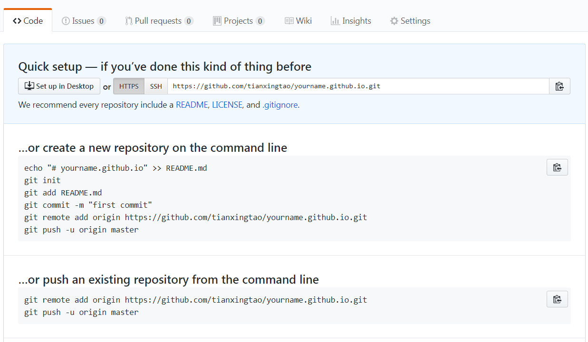
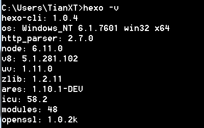

Hexo building your Blog.
撰写于 2017-07-09 修改于 2018-01-18
准备
你需要准备好以下软件
- Node.js
- Git
配置Node.js环境
下载Node.js安装文件
根据自己Windows版本选择下载安装相应文件。安装时一路Next即可。
验证安装
同时按下 Win 和 R ，输入cmd，敲击回车，打开命令行界面，在命令行界面中输入：
如果结果如下图所示，则说明安装正确，可以进行下一步，否则需回去检查安装过程。
配置Git环境
下载Git安装文件
安装完成后，还需要最后一步设置，在命令行输入：
下载安装时一路Next即可。
验证安装
在命令行界面中输入：

如果结果如下图所示，则说明安装正确，可以进行下一步，否则需回去检查安装过程。
配置Github
注册
打开https://github.com/ ,按照提示注册GitHub账号
登录之后点击页面右上角的加号，选择New repository：

进入代码库创建页面,在 Repository name 下填写 yourname.github.io

正确创建后你将会看见如下界面：

开启gh-pages功能
点击界面右上角的 Setting，然后一直向下，直到看见GitHub Pages，然后点击Automatic page generator，Github将会自动替你创建出一个gh-pages的页面。如果你的配置没有问题，那么大约15分钟之后，yourname.github.io这个网址就可以正常访问了，这样Github的配置已经全部结束了。
Git连接Github
创建SSH Key
在用户主目录下，看看有没有.ssh目录，如果有，再看看这个目录下有没有id_rsa和id_rsa.pub这两个文件，如果已经有了，可直接跳到下一步。如果没有，打开cmd创建SSH Key：
然后一路Next
登录GitHub
找到 Setting 并点击，然后依次点击 SSH and GPG keys 和 Add SSH Key ，之后填上任意Tile，并在Key文本框中粘贴 id_rsa.pub 文件中的内容。，最后点击 Add Key即完成。
配置Hexo
安装Hexo
在自己认为合适的地方创建一个文件夹，然后在文件夹空白处按住Shift+鼠标右键，然后点击在此处打开命令行窗口。在命令行中依次输入：
最后验证Hexo是否安装成功，在命令行中输入：

如果你看到了如图文字(版本号可能不一样)，则说明已经安装成功了。
初始化Hexo
接着在命令行依次中输入：
之后npm将会自动安装你需要的组件，只需要等待npm操作即可。
首次体验Hexo
继续在命令行中依次输入：
然后会提示INFO Hexo is running at http://localhost:4000/. Press Ctrl+C to stop.
在浏览器中打开http://localhost:4000/，你将会看到：
到目前为止，Hexo在本地的配置已经全都结束了。